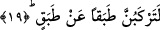

gece karanlığına da benzememektedir. Gece ve gecenin topladıkları meselesi de aynen
böyledir. Çünkü bu ifâde gündüzün aydınlığının ardından gecenin karanlığının
çöktüğüne işâret ile hayvanların uyanık iken uykuya yattıklarını ifâde etmektedir.
Nitekim dolunay olmuş ay da aynen böyledir. Çünkü dolunay olmuş ay, bir zamanlar
eksik iken artık kemale erdiğini gösterir.
Kâşânî bu âyeti şöyle tefsir ediyor: Nefsin batması ile safi hale gelmiş ve dolunay
olmuş, nuru tamamlanmış, kâmil hale gelmiş kalp kamerine yemin ederim.
et-Te’vilâtü’n-Necmiyye’de bu âyetten şu işâret çıkarılıyor: Burada muhakkık olan
ârif kalbinin ayı üstüne tam bedir hâline geldiği esnâda yapılan yemine işâret
edilmektedir.
19. Halden hale geçersiniz.
Yani siz elbette bir halden sonra bir başka hal ile karşı karşıya kalacaksınız.
Bunlardan her biri şiddet ve fecâatte benzerine tam uygundur.
Âyette yer alan “tabak” kelimesini ele alalım. Arapçada “ma haza bi tıbkı haza”
derler. Bunun anlamı; şu şunun tıpkı, aynısı değildir, bu şuna tıpatıp benzer değildir
demektir.
Rağıb Isfahânî’nin ifâdesine göre birbirine benzeyen isimlerden mutabakat, bir şeyi
onun miktarı olan bir başka şeyin üzerine koymak demektir. Bu uyum bazen bir
başkasının üzerinde olan şeyle mutabakat, bazen de başka bir şeye uygun düşme
anlamında mutabakat şeklinde kullanılır olmuştur. Yine tabaka kelimesinin çoğulu
olarak tabak mertebe demektir. Bu son mânâ âyetin deyimiyle “rükub/binmek”
kelimesine uygun mânâdır. Âyetteki rükûb kelimesi ise yükselmek anlamını ifâde eder.
Bütün bu açıklamalardan sonra âyet: Mutlaka siz bir halden bir başka hale
geçeceksiniz. Bu haller şiddet yolunda tabakalardır. Bunların bazıları bazılarından daha
yüksektir. Bu tabakalardan maksad ölüm ve onu izleyen kıyamet makamı ve durakları ile
istikrar buluncaya kadar Cennet veya Cehennemden herhangi birinde kıyamet
musîbetleridir. Bazı kırâat âlimleri bu âyeti tekil olarak “le terkebenne” şeklinde
okumuşlardır. Bu durumda hitab insanlara değil ferd olarak insana olur.
“An tabak” ifâdesi ondan önce geçen “tabak” kelimesinin sıfatıdır. Veya daha önce
geçen “le terkebunne” fiilindeki zamirden haldir. Sıfat olursa “bir hali geçen”, hal
olursa “bir halden diğerine geçtikleri halde” şeklinde tercüme edilir.
İfadede yer alan “an” harf-i cerri meşhur olan mücavezet, herhangi birşeyi geçmek
mânâsınadır.
İbnu’ş-Şeyh’in ifâdesine göre bu âyetteki “an”, “ba’de” mânâsınadır. Çünkü insan
herhangi bir şeyi geçip başka bir şeye ulaştığında bu ulaştığı ikinci hale birinciden